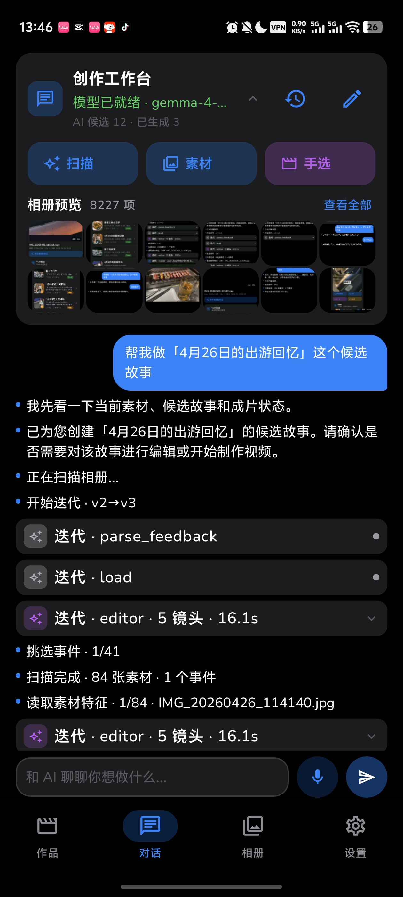
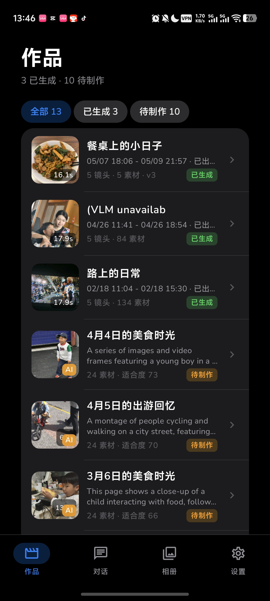
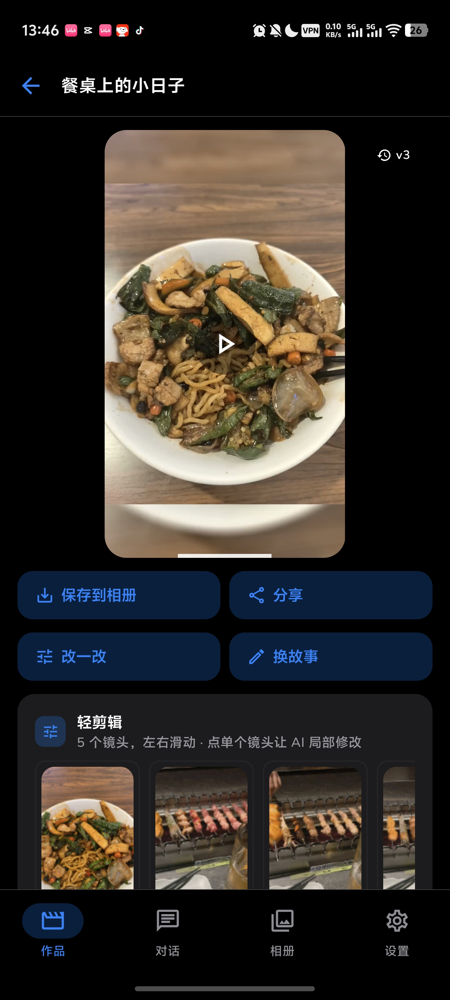
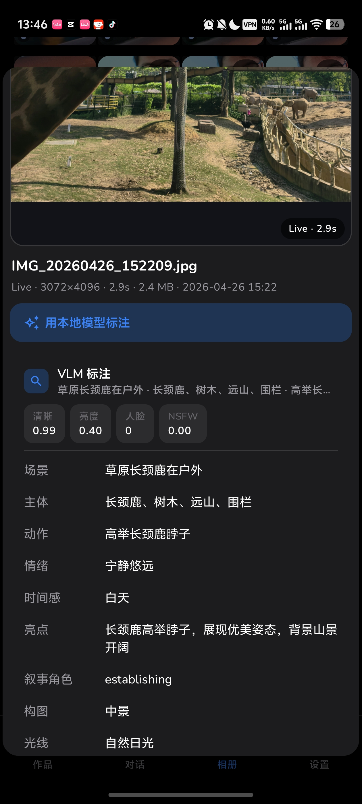

这不是普通相册 App
我用 AI 做了一个端侧 AI App
重点不是“我做了一个工具”，而是 AI 参与开发产品，产品内部又运行端侧 AI。
AI develops the AppOn-device AI runs insideVlogPilot


AI 参与开发软件，软件里的端侧 AI 再服务用户。
class VlogPilotScreen
Album().scanRecentMedia()
PerceptionEngine().understand()
AgentRuntime().planStory()
VideoRenderer().exportMp4()
feedback = "快一点，换镜头"
result = feedback.iterate()
开发阶段
AI Agent 帮我把 App 做出来
拆功能、写界面、接模型、改崩溃、补测试。它不是一句话变魔法，而是参与真实开发流程。
01
拆功能把想法拆成页面、数据和 pipeline
02
写界面贴近真实 Android 产品体验
03
改 Bug修模型导入、刷新和崩溃
04
补验证让流程能完整跑通
开发阶段：AI Agent 帮我写 App，但产品判断仍然要清楚。
产品本身
它看起来像相册，核心是理解素材
作品页里不是只有文件列表，而是 AI 候选、已生成、待制作、镜头数、素材数和版本状态。
作品 13已生成 3待制作 10v2 -> v3

不是整理图片，而是把相册变成可理解、可规划、可创作的素材库。

成片以后还能继续改
生成不是终点，用户还能继续指挥
保存、分享、改一改、换故事。你可以对已生成的结果继续提出目标，让 App 重新组织素材。
保存 / 分享成片可以直接进入真实使用流程。
share
改一改局部换镜头、调节奏、减少字幕。
v3
换故事同一批素材可以重新生成叙事。
story
这就不是传统相册了，它更像本地运行的素材理解助手。
端侧 AI 的价值
相册很私人，数据尽量留在本地
每一张照片、每一段视频都上传云端分析，很多人会有顾虑。端侧模型让理解和分析尽可能发生在设备里。
本地模型标注No upload by default照片和视频留在设备上

端侧 AI 的价值，不只是省接口费，更是让私人素材更可控。
同一个思路，不同硬件
手机跑轻量模型，PC 跑更强模型
端侧不等于只能在手机上。安卓、iOS、PC 都可以做，只是模型大小和任务复杂度不同。
Mobile
轻量、私密、随身，适合快速理解相册和生成初版建议。
Laptop
更大的上下文，适合长视频整理、批量索引和素材筛选。
PC GPU
跑更强视觉模型，做复杂视频理解、风格生成和自动剪辑。
手机强调私密和轻量，PC 可以承担更重的视频理解和创作任务。
Agent 模式
关键不是识别，而是理解 + 规划 + 创作
User request
帮我做一条旅行 Vlog，或者把这个故事重剪一版。
目标
Understand media
理解主题、人物、场景、动作、节奏和情绪。
素材库信号
Plan editing
决定开头、推进、转场、字幕和结尾。
剪辑顺序
Suggest
告诉你为什么选这些片段，以及哪里可以调整。
可解释建议
Create
生成初版，并根据反馈继续迭代。
vlog v3
Agent 不是给几个标签就结束，而是围绕你的目标组织素材。
一个入口
个人内容 Agent从相册开始
我真正想验证的是：当 AI 可以帮助我们开发软件，软件里面又能运行本地 AI，产品形态会不会发生变化。
AI-built AppOn-device AIPersonal Creative Agent
后续更新
端侧模型怎么选、App 怎么做、Agent 流程怎么设计，以及手机和 PC 上的效果差异。
端侧模型选择01
App 架构和体验02
Agent 工作流03
手机 vs PC04
VlogPilot 只是第一个实验，目标是每个人本地的个人内容 Agent。